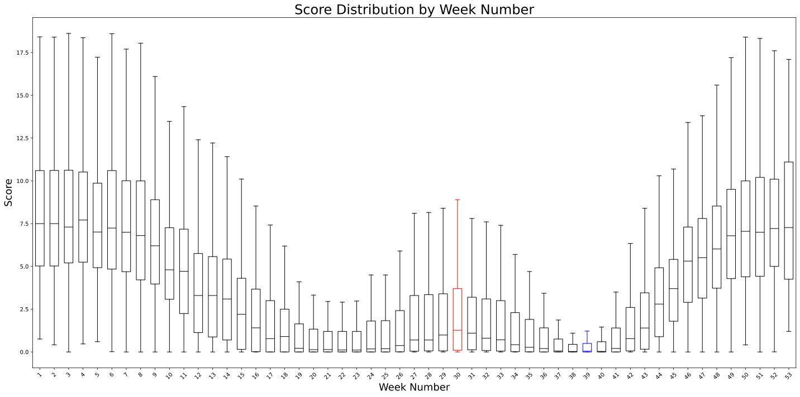
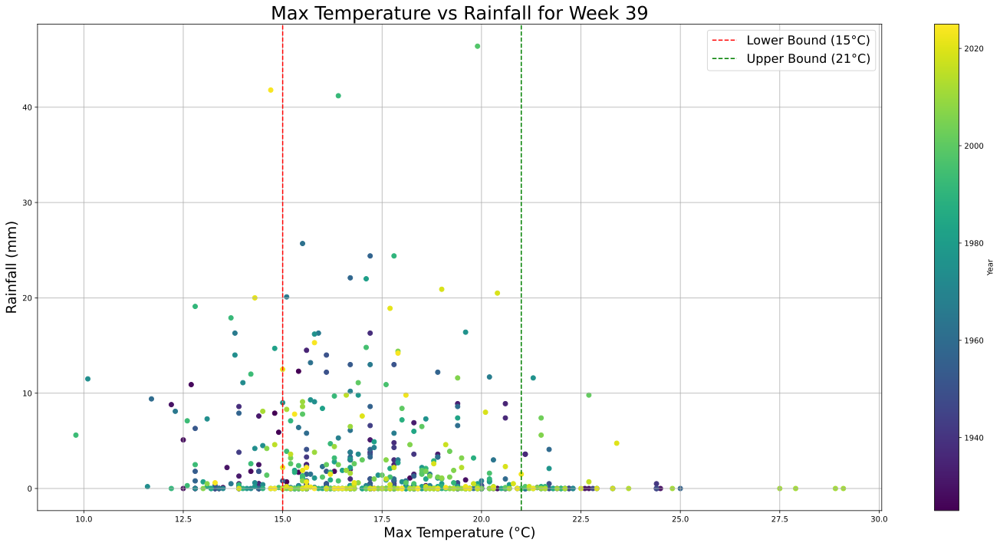
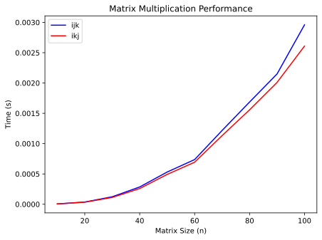
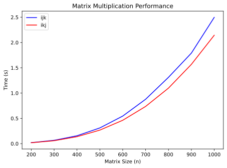
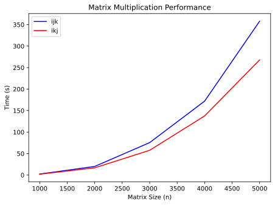

Tristan Hodgson


One Day Project: What's the Best Time of Year for Exams?
Sunday 27th of September, 2026Exams are never a fun experience, yet they can be made so much worse by the weather. My recent exams at the end of my second year were particularly bad for this, thanks to the red extreme heat warnings for temperatures that exceeded 38°C in the exam hall.
This led me to a slightly silly question: when would be the best time of year for exams? The natural follow-up question is: what makes a good exam week? For this project, I consider only the weather. Other factors like proximity to major holidays or birthdays are certainly important, but are much harder to quantify, so I ignore them.
The way I decided to score each potential exam week is by applying the following function: $$(1-\mathbb{I}_{[15,21]}(\text{Max temp})) \times \min(|\text{Max temp} - 15|, |\text{Max temp} - 21|) + \frac{1}{20} \text{Rainfall}.$$ We use the maximum daily temperature to avoid contaminating our score with cooler overnight conditions, not relevant to the times that exams are generally taken. We include the $\frac1{20}$ weight term to prevent the difference in scale between temperature and rainfall dominating the score. The parameters 15 and 21 are somewhat arbitrary, but are based on the temperature range I find most productive. This is perhaps slightly cooler than many would prefer, though I do have to wear a suit and gown to my exams.
Each year contains 53 possible weeks (since we must include partial weeks); we go through each one and find the week with the minimum score when averaged over every day in that week in all years (1925-2025). This week turns out to be week 39. You can see the distribution of scores across all weeks in the following boxplots:

For each week we create a boxplot of the score function, the boxplot shows the distribution of scores for each day in that week over the hundred year dataset. The red plot is a rough estimate of my current main exam week, while the blue plot is our newly proposed ideal.Having determined the best week, we can now investigate what the weather looks like during our new exam week. The following scatter plot shows maximum daily temperature against rainfall for our chosen week. This shows us that the vast majority of days in this week lie near the bottom of our plot (indicating low rainfall), and in between the horizontal lines (indicating pleasant temperature).

We now have our answer: the best week for exams is the 39th week in that year. When does this come out to? It varies year to year, but roughly corresponds to the week commencing the 21st of September... one week before my birthday, far from ideal!
CodeOne Day Project: Profiling Algorithms for Matrix Multiplication in C
Sunday 20th of September, 2026It's always been a slight point of embarrassment for me that I don't know a "real" programming language. I've done lots of Python and bits of R and SQL but I've never really learnt a compiled language. This short project was a brief excursion into the world of C, investigating a new facet of the familiar problem of matrix multiplication.
I compared two algorithms to calculate the product of random matrices sampled from $\operatorname{Uniform}[0,1]^{n \times n}$. The two algorithms are mathematically identical but computationally quite different, despite having the same time complexity.
for (int i = 0; i < n; i++) {
for (int j = 0; j < n; j++) {
for (int k = 0; k < n; k++) {
C[i * n + j] += A[i * n + k] * B[k * n + j];
}
}
}for (int i = 0; i < n; i++) {
for (int k = 0; k < n; k++) {
for (int j = 0; j < n; j++) {
C[i * n + j] += A[i * n + k] * B[k * n + j];
}
}
}When we run both algorithms, we can see a clear performance difference in the graphs below that, further, seems to increase as $n$ increases.



The thing to note when attempting to explain this performance discrepancy is that we store matrices as $A_{ij} = A[i * n + j]$ meaning that moving along a row means getting consecutive elements in memory while moving down a column necessitates a jump of $n$ places. In the ijk version, we walk down a column of $B$ leading to us skipping around the array, whereas in the ikj version, we walk along rows of $B$ and $C$, leading to more consecutive memory accesses.
If we focus on the $n=1000$ case, and we use perf to profile the code, we can see this in practice through the cache misses. In the slower ijk version we have 5,274,318 cache misses compared to just 218,855 in the faster ikj version. More cache misses means that the processor has to spend more time fetching data from slower memory, reducing the performance of the code.
CodeObservations from the comment sections of the Financial Times
Wednesday 26th of August, 2026I have a bad habit. Others may be addicted to infinite scroll social networks, I find myself in the thrall of a different vice: the comments section of the FT. While the debates in this forum are generally less aggressive than those of the wider internet, I have noticed that the most bitterly debated lines seem to follow a similar pattern. One commenter will bring up a social failing of the UK, and another will reply to point out that everything is fine and that we can't afford to do more. They are entirely talking past each other.
The example that prompted me to write this short blog post was the comments under an article about Burnham's attitude to business, below were some entirely unrelated comments arguing about how horrible it is that the UK has homeless children, then a reply about the cost of caring for the homeless, then devolving into a discussion of the value of providing the state pension for high net worth households.
I bring this up not to diminish the importance of any of these issues; they are all important issues for us to solve, and ones with no correct answer at that. I instead wanted to point out the way in which they were just talking past each other. It seems to me that the issue here is that people are starting from different bases.
About half the people in this debate, seemed to start from an axiom of equality. They often argued in favour of policies that would diminish ownership (most commonly through taxes) to increase social equality because they believe that the role of the state is to ensure that nobody falls too far behind. To them, homelessness is a failing of the state to provide support.
The others seemed to start from an axiom of personal responsibility. They believed that success of the individual belongs to the individual and so any attempt to take any part of that success (again most commonly through taxes) should come with a strong justification for how it will be used. To them the pensioners deserve their pension, regardless of their net worth as partial compensation for the tax they have contributed.
While this is only one example from one quite niche venue, I have started to think more and more about this idea of bases as a model for understanding the world-view of participants in debates more broadly. This links to an idea from Amanda Ripley's excellent book High Conflict* which suggests that when debating people on the right of the political spectrum we should appeal to ideas like duty and personal responsibility whereas for those on the left fairness and equality work better.
In my own life, I've recently started to try to be conscious of people's bases when debating with them. I have seen some success in this approach and it has tended to lead to more productive conversations where both sides get to understand each other's ideas a little better. Perhaps someone could introduce the FT comments section to the idea...
* I think this idea was originally from The Righteous Mind by Jonathan Haidt (which I am yet to read) but is referred to by Ripley in her book.
Performance Modelling of In-Database Sparse Matrix Multiplication
We benchmark and model matrix multiplication performed entirely inside PostgreSQL against a conventional Python workflow using NumPy. We additionally model a slow 10 Mbps connection by adding a transfer-time penalty to the Python workflow. For dense matrices, NumPy consistently outperforms the SQL approach by a wide margin, and the gap grows with matrix size. For sufficiently sparse matrices, the SQL approach becomes competitive and can be faster, as the database can filter out a large fraction of unnecessary multiplications while also eliminating client-side data transfer. These results suggest in-database multiplication can be advantageous for sparse workloads or constrained network conditions, while dense multiplication remains better suited to NumPy.
Write-upPresentation on Kolmogorov Complexity
I recently gave an eight minute presentation on Kolmogorov complexity for a varied audience consisting of mathematicians ranging from first year undergraduates to professors. Due to the lack of computer science background of the audience I avoided the formalism of turing machines, to focus the talk on the more mathematically interesting aspects, such as the uncountability of the complexity function. I also illustrated the concept of Normalized Information Distance (NID) using a simple example inspired by the work of Rudi Cilibras and Paul Vitányi, demonstrating how we can use translations of the UN Declaration of Human Rights to reveal relationships between languages .
Download Slides (PDF)